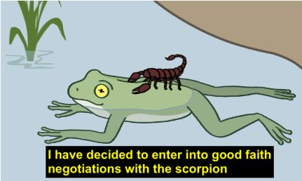

--Rick Hanson
A million years ago, I won first place in my division at the biggest dance competition in my world.
Are you imagining that I was confidant and feeling good about myself? LOL. Please.
No, I was riddled with panic and despair. Because the delightful “inner voice” convinced me that those judges made a mistake, that I didn’t deserve to win, that anywhere I might go dancing afterwards, I’d have to live up to that error, and that I flat-out couldn’t do it.
It didn’t matter what others thought; their reassurances rolled right off. Nothing dissuaded me from knowing the win was undeserved.
Under this relentless pressure, I quit dancing for what turned into 18 years.
Not because I lost. Because I won.
Thought made sure the win was seen as a loss.
The mind skews toward the negative.
That’s its nature.
Because whatever thought is, in order to (seem to) exist at all, it must have something to think about.
So it requires problems. It requires, Something’s not right projects, and, WHY did this happen? riddles, and, How can I fix this? solutions and, How can I think my way to safety in an unknown future? worries.
There’s no mental job security in a no-problem present moment.
So given an opportunity, the mind will ignore every positive and quickly go instead to, “not good enough,” and, “loser, failure, bad, undeserving, unlovable, deficient.”
With this negative skew, thought defines us.
Turning every situation, every moment, every context, into a definition, an identity, of an entire not-enough person.
"You may have gotten away with a win but you’re really a loser, a fake, not as good as others, and a terrible person.”
Along with my favorite- Who do you think you are?
Always a fun question.
First, because the thing that’s asking is a gatekeeper with its own agenda.
So it conveniently leaves out everything that doesn’t serve its problem-generating purpose.
All that life evidence we trot out to prove our lack and flaws is ferociously slanted and completely biased by the gatekeeper.
And second, ever wonder why the mind cares so dang much about who or what we are? Why it constantly needs to declare, “I am lazy, selfish, guilty, fake, bad, stupid, weak” etc?
I am I am I am I am…
Whatever words follow, don’t even matter.
For now just noticing what we depend on to tell us who we are.
Because there is no other source to know what we are, other than what thought says.
None.
That negative self-serving self-evaluation is the only way we have, to know ourselves.
In fact, the only way we know we exist at all, is that thought says so.
Which means we have zero idea who or what we are. Because we have zero access to anything other than the mind’s bias.
So it’s no surprise that we think there’s something- many things- wrong with us,
and that we- WE!- have to solve them.
As if it's possible to ever have the mental clarity to solve anything.
As if it's possible to ever even know if perceived problems are indeed problems.
So that a should-be-celebrated win can get twisted into failure. And our possible advantages and lovely character traits manage to get dismissed and unloved, if not completely unseen.
And if right about now, thought is saying, “Well then, what’s the point? Life is meaningless...”
Notice what it’s really saying is, “You need me. Without me you’re nothing.”
Which may be true.
But what’s so terrible about being nothing? It can’t be worse than being a hopeless failed loser.
Besides, nothing is nothing. It can’t be turned into something with name calling and I-am-ing.
Which means, whatever we are, since we don’t know and never will,
we might as well play with noticing this one tiny moment,
without evaluation (thought,) correction (thought,) future (thought,) or improvement (thought).
And then we can see if we need
Any other dance but
That.
